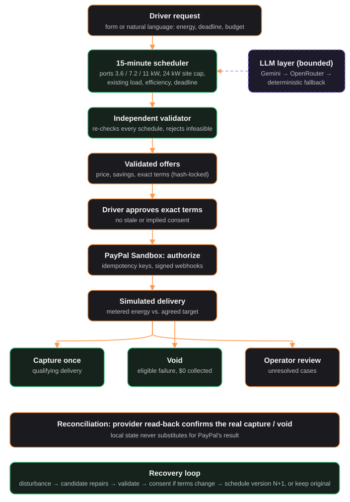

At a glance
An EV charging platform that plans charging in 15-minute slots under site power limits, shows only validated offers, and ties payment to verified delivery. A bounded AI agent helps with language. Deterministic code owns every price, schedule and payment.
Overview
GridWindow FlexPay is an EV charging platform I co-built with Satyam Pandey. A deterministic engine plans charging in 15-minute slots under per-port and site power limits, and an independent validator checks every schedule before a driver sees it. Gemini, with OpenRouter and deterministic fallbacks, handles natural-language requests and explanations but never sets prices or moves money.
Payments run on the PayPal Sandbox: authorize on approval, capture after delivery, void on eligible failure, with idempotency keys, signed webhooks and reconciliation. When a charger or site limit changes, a recovery engine proposes validated repairs and asks for consent before changing terms.
The problem
A parked EV does not need electricity every minute. It needs enough energy before the driver leaves. Shared charging sites face expensive, congested evening hours and a shared electrical capacity limit.
- Charge everyone immediately and peak demand spikes.
- Push everyone to the cheapest hour and you create a new bottleneck.
- When a charger slows or the site's power drops after a driver has agreed to a plan, who decides what happens, and does the driver still pay?
The solution
The key design idea is AI for language, deterministic code for everything that matters.
- Plan. 15-minute allocation around the energy target, port capacity, site limit and departure deadline.
- Validate. An independent validator re-checks every schedule. Infeasible requests are never presented as valid promises.
- Consent. The driver approves the exact terms (merchant, amount, window, expiry) before PayPal is involved.
- Settle. Authorize first, capture only after qualifying delivery, void on eligible failure, and send unresolved cases to operator review.
- Recover. Disruptions are repaired without silently changing the agreement.
Key features
Driver: Smart Charge
- Request by form (energy, port, plug-in time, deadline, budget) or by natural language, for example "Find me 30 kWh before 7 AM, under $20".
- Compares immediate charging with validated flexible windows, with modeled price and savings. Unmet savings goals are explained, never silently relaxed.
- A FlexReceipt records consent, simulated energy delivered and the settlement outcome.
Scheduling engine
- Ports at 3.6 / 7.2 / 11 kW and a shared 24 kW site cap, plus existing reservations, building load, charging efficiency and occupancy.
Payments
- Approved terms are immutable: they are hash-checked server-side and an altered hash is rejected.
- Idempotency keys, signed webhook verification, provider read-back and reconciliation of pending states.
- Ordinary capture, void and recovery-triggered settlement were exercised on the hosted Sandbox (for example $15.56 captured for 30.02 kWh of simulated delivery, and $0.00 collected on an operator-attributed failure).
Autonomous recovery
- Handles reduced charger power, a site-cap cut, early departure and charging failure.
- Generates feasible repairs, validates them deterministically, and requires the driver to approve the exact proposal version if terms change.
- No rewritten history, no impact on other reservations, no stale consent, and no duplicate commits (lease and fencing).
- A Bryntum timeline shows the original plan against the recovered plan.
Operator console
- Site load, reservations, payment states, synthetic fault controls and a recovery workflow.
- An AG Grid reservations table with filter, sort and CSV export.
Agentic commerce and developer surface
- Seven MCP tools let an external AI client discover offers, show exact terms and prepare PayPal checkout. The human must still approve, and the tools expose no arbitrary payment operations.
- OpenAPI contract, APIMatic-generated TypeScript and Python SDKs, and a hosted developer portal.
- Channel3 integration for EV-accessory discovery.
What the AI can and cannot do
| The AI can | The AI cannot |
|---|---|
| Fill preferences from natural language | Invent a price or merchant |
| Explain why an offer qualifies | Change approved terms |
| Recommend among validated options | Approve a purchase for the driver |
| Select a validated recovery candidate | Override the physical validator |
| Explain a recovery result | Capture or void money |
The agent talks, the server decides, a person approves. If the LLM provider is down, the chain falls back from Gemini to model fallbacks, then OpenRouter, then a labeled deterministic fallback, and the model that answered is recorded.
How it works
A Next.js UI sits on server APIs with session and origin checks and schema validation. Those call a deterministic domain layer (allocator, validator, economics, terms, recovery, consent, payment state machine), backed by PostgreSQL (embedded PGlite for local runs) and the PayPal Sandbox. The LLM layer is grounded and bounded, and never sits in the money path.

Tech stack
| Layer | Technologies |
|---|---|
| App | Next.js 16, React 19, strict TypeScript |
| Data | PostgreSQL, embedded PGlite |
| AI | Gemini (primary), OpenRouter (fallback), Model Context Protocol (MCP) |
| Payments | PayPal Sandbox API (authorize, capture, void, webhooks) |
| UI components | Bryntum Scheduler, AG Grid |
| Integrations | Channel3 API, APIMatic (OpenAPI and generated TypeScript and Python SDKs) |
| Quality and delivery | Vitest, Playwright, ESLint, GitHub Actions, Render |
Engineering highlights
- Integer cents, watts and watt-hours for money and energy, so there is no floating-point drift.
- Independent validation before any offer or commit.
- Immutable financial terms verified server-side.
- Durable recovery history. Runs, decisions and schedule versions survive a reload.
- Provider-confirmed settlement. A local state change never substitutes for PayPal's actual capture or void result.
- Defense in depth. Session and origin checks, schema validation, idempotency and reconciliation.
- Test isolation. Automated suites cannot touch hosted databases, model keys or real provider calls.
Results
All numbers below are modeled on synthetic data, not field measurements.
Scheduler benchmark
500 seeded synthetic nights, 1,500 requests, 0 validator failures.
| Policy | Served | Mean cost / session | Mean site peak |
|---|---|---|---|
| Immediate charging | 1,246 | $10.61 | 22.1 kW |
| Static off-peak | 1,024 | $6.01 | 20.2 kW |
| Greedy cheapest tariff | 1,243 | $6.86 | 21.9 kW |
| GridWindow optimized | 1,254 | $5.44 | 17.6 kW |
That is about 49% lower modeled cost and about 20% lower peak than immediate charging, while serving the most requests. Caveats: 125 pairwise comparisons were unfavorable, and 246 requests were physically infeasible even when optimized.
Recovery benchmark
200 seeds, 5,820 scenarios (5,789 applicable).
- Delivered energy with driver-approved recovery: +2.9% versus keeping the plan (119,776 to 123,271 kWh).
- Shortfall against targets: -6.8% (51,489 to 48,003 kWh).
- 56 recoveries were automatic and 680 followed driver approval.
- Charger failure is unrecoverable by design (no power, no energy). That is where the void policy protects the driver.
- The agreed price never changed, and no applied change fell below the minimum operator margin.
- Three scenarios where recovery delivered slightly less than the static plan (50 Wh, 3 Wh and 15 Wh) are published in the docs.
Testing & release
Release v1.0.2, as reported in the project's own docs:
- Vitest: 1,023 passed, 12 skipped (real-Postgres tests, documented), 0 failed.
- Playwright: 131 passed, 6 skipped, 0 failed.
- TypeScript and ESLint clean, production build, release secret scan, generated SDK check and GitHub Actions CI.
- Tagged releases v1.0.0, v1.0.1 and v1.0.2.
Status & limits
- Built for and submitted to a hackathon. It is a prototype, not a production service.
- PayPal runs on real Sandbox APIs with test money. Charging, tariffs, building load and faults are synthetic simulation.
- For production it would need real charger control, real money handling, identity, and a durable job queue.